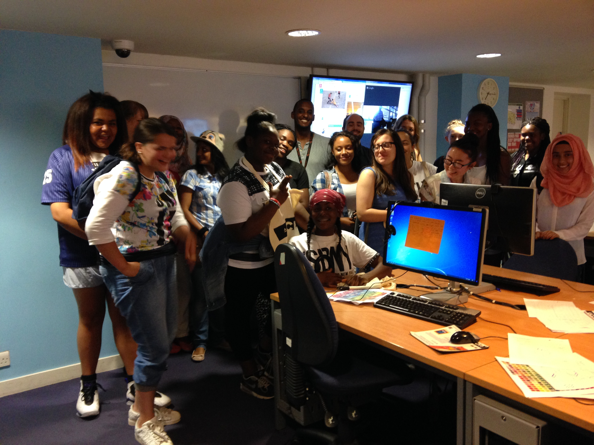
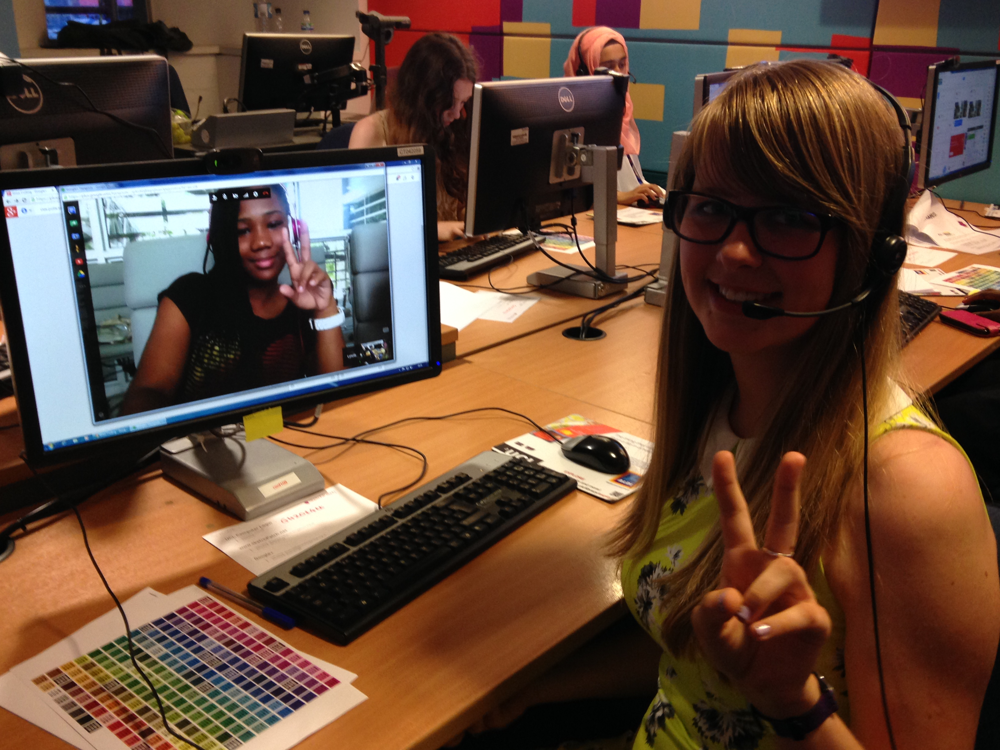

Currently, Nicola works as a tutor for Blue{shift} Coding providing coding and robotics classes for children aged 6-13, running after-school clubs, coding workshops, summer coding camps for kids in London. She teaches a variety of courses, including Python, VR, Scratch and more.
Between 2012 and 2016 Nicola was involved in leading creative coding workshops to a range of audiences. The workhops taught and encouraged students to explore the basics of computer programming and developing projects in a creative context. The workshops developed participants coding skills by using the sketchPatch website (based on Processing) as a creative tool to code generative images and interactive animations. Often the workshops were the first time the students had ever encountered computer cod; the sketchPatch web platform providing an effective starting point for understanding the fundamental concepts of computer programming. The workshops are particularly successful in engaging groups such as young women, girls and certain minorities who are considered disproportionately under-represented in STEM subjects (science, technology, engineering and maths). Students are encouraged to learn and share with others through an explorative, collaborative and playful process that also challenges them in order to improve their technical understanding and problem-solving skills. A list of the workshops Nicola has lead are detailed below. - 5 day workshop with 15 female students in the UK collaborating with 15 in Jamaica online via Google+, all aged 13-15 yrs. The workshop was hosted at UCL Engineering, London and organised and sponsored by Generating Genuis and Google, July, 2014. - 3 day workshop with sixth form students @ Crossways College, London, sponsored and organised by Generating Genius, February, 2012. - 3 day workshops with students aged 12-13 yrs @ Lambeth Academy, London, sponsored and organised by Generating Genius, April, 2011. - 1 day workshop with patients aged 5-60 yrs @ Brompton Hospital, sponsored and organised by the V&A, July, 2013.

